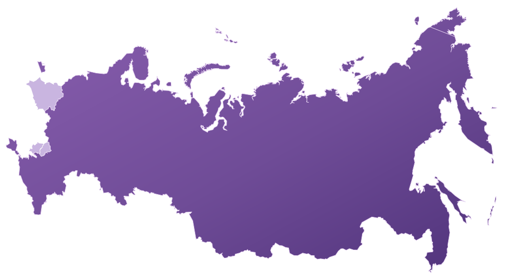
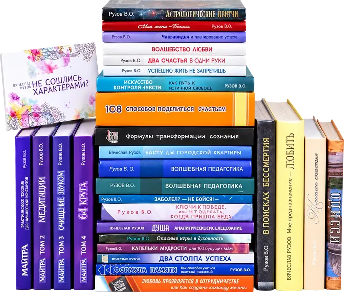
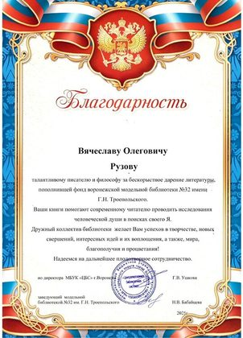
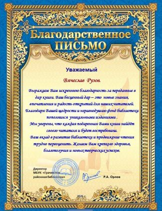
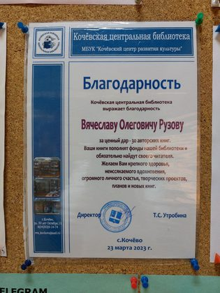
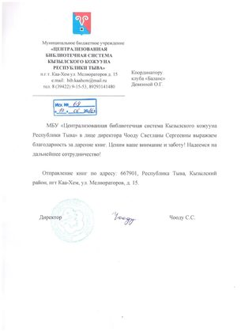

Библиотечная программа — просветительский проект клуба «Баланс». С ноября 2019 года инициативная группа дарит библиотекам комплекты книг Вячеслава Олеговича Рузова и Татьяны Рузовой. Книги ставят в фонд, вносят в электронный каталог и выдают читателям по читательскому билету. Сегодня они есть уже более чем в 180 библиотеках, включая ведущие национальные и государственные библиотеки по всей России, — от Российской государственной библиотеки в Москве до маленьких сельских библиотек, куда новые книги приходят нечасто.
Пусть читает весь мир!
Как всё начиналось: первая библиотека — РГБ
Первой библиотекой, пожелавшей хранить книги Рузова в своём фонде, стала Российская государственная библиотека (РГБ) — главная библиотека страны на улице Воздвиженка, 3/5 в Москве. Спонсор первого комплекта нашёлся сразу: набор собрали и оплатили буквально за несколько дней, и вскоре книги появились в фонде и электронном каталоге РГБ. Подробнее о том, как начиналась программа, — в хронике библиотечной группы на портале Голока.
За первой победой последовали другие. Книги приняли Российская национальная библиотека в Санкт-Петербурге, Научная библиотека МГУ, библиотека Русского музея, Национальная библиотека Беларуси и Национальная библиотека Республики Татарстан. Через Российскую книжную палату издания разошлись по крупнейшим научным библиотекам страны — от Новосибирска до Хабаровска.
В декабре 2023 года участники программы сделали Вячеславу Олеговичу символичный подарок ко дню рождения — 108 комплектов книг в 108 библиотек. Сегодня библиотек уже более 180, и каждый месяц к ним добавляются новые.
Книги Рузова в библиотеках: фото
Так подаренные книги встречают в библиотеках: выставки, полки новых поступлений и первые читатели.
Книги для сельских и городских библиотек по всей России
Комплекты получают и областные библиотеки, и районные, и совсем небольшие сельские. Книги Рузова читают в Москве и Подмосковье, Санкт-Петербурге, Карелии, Коми, Архангельской и Кировской областях, Татарстане, Башкортостане, Удмуртии, Марий Эл, Пермском крае, Омской, Новосибирской и Иркутской областях, Республике Алтай, Тыве, Югре — и даже в Магадане. Опыт программы показывает: в небольших городах и сёлах книгам особенно рады и берут их охотнее, чем в мегаполисах.

Список библиотек по регионам (179)
- Москва. Российская государственная библиотека, Библиотека им. А. Н. Толстого, Библиотека им. Н. А. Некрасова, Центральная библиотека № 106 ЮВАО, Библиотека № 5 им. М. А. Волошина, Отдел комплектования библиотечных фондов ЮАО, Центр комплектования литературы библиотек ЗАО, Научная библиотека МГУ, Российская книжная палата; Троицк: Центральная городская библиотека № 2
- Московская область. Озёры: Библиотека им. Григоровича; Красногорск: Центральная библиотека; Люберцы: Центральная библиотека им. С. Есенина; Березнецово: Березнецовская сельская библиотека № 17; Балашиха: Библиотека № 3 ЦБС им. А. Белого, ЦБС им. Ф. И. Тютчева; Ивантеевка: Центральная городская библиотека им. И. Ф. Горбунова; Шатура: Библиотечно-информационный центр; Дзержинский: Дзержинская центральная библиотека; Орехово-Зуево: Центральная городская библиотека им. М. Горького; Электрогорск: Центральная библиотека; Щёлково: Центральная библиотека № 3; Шаховская: Шаховская центральная библиотека; Солнечногорск: Солнечногорская межпоселенческая районная библиотека
- Алтайский край. Бийск: ЦБС г. Бийска
- Архангельская область. Шипицыно: Центральная районная библиотека Котласского района
- Астраханская область. Астрахань: Центральная городская библиотека, Библиотека для молодёжи им. Б. Шаховского; Камызяк: Камызякская межпоселенческая библиотека
- Белгородская область. Валуйки: Валуйская ЦБС; Морквино: Морквинская модельная библиотека
- Брянская область. Клетня: Клетнянская межпоселенческая центральная библиотека; Погар: ЦБС Погарского района; Новозыбков: Центральная библиотека им. князя Н. Д. Долгорукова
- Владимирская область. Гусь-Хрустальный: Библиотечный информационный центр; Вязники: Библиотечный центр «Интеллект»; Юрьев-Польский: Центральная библиотека
- Волгоградская область. Палласовка: Палласовская межпоселенческая ЦБС; Иловля: Иловлинская межпоселенческая центральная библиотека; Медведев: Медведевская сельская библиотека; Озёрки: Озёрская сельская библиотека; Быково: Центральная районная библиотека им. М. К. Луконина
- Воронежская область. Воронеж: Центральная городская библиотека им. А. Платонова, Модельная библиотека № 32 им. Г. Н. Троепольского; Богучар: Богучарская межпоселенческая центральная библиотека; Верхняя Хава: Верхнехавская центральная библиотека; Терновка: Терновская межпоселенческая библиотека; Эртиль: Межпоселенческая библиотека им. А. С. Пушкина; Подгоренский: Центральная районная библиотека
- Ивановская область. Вичуга: Центральная библиотека ЦБС
- Иркутская область. Усть-Илимск: Центральная городская библиотека им. Н. С. Клестова-Ангарского; Еланцы: Ольхонская межпоселенческая библиотека; Баяндай: Межпоселенческая центральная библиотека Баяндаевского района; Залари: Заларинская ЦБС; Иркутск: Гуманитарный центр — библиотека им. семьи Полевых
- Калининградская область. Долгоруково: Чапаевская сельская библиотека
- Кемеровская область. Юрга: ЦБС г. Юрги
- Кировская область. Киров: Библиотека № 21 (с. Русское); Верхошижемье: Центральная библиотека им. М. М. Синцова; Подосиновец: Центральная библиотека им. А. Филёва; Нагорск: Центральная районная библиотека им. Г. И. Обатурова; Стулово: Слободская районная ЦБС; Слободской: Городская библиотека им. А. Грина; Ленинская Искра: Искровская сельская библиотека; Вятские Поляны: Вятскополянская районная ЦБС; Филиппово: Филипповская библиотека им. В. А. Караваева; Мураши: Мурашинская межпоселенческая библиотечная система; Безбожник: Безбожниковская сельская библиотека; Мурыгино: Мурыгинская поселковая библиотека; Цепели: Цепелевская сельская библиотека; Швариха: Шварихинская сельская библиотека
- Костромская область. Георгиевское: Межевская центральная районная библиотека; Галич: Межпоселенческая библиотека им. М. Горького; Антропово: Центральная библиотека им. М. С. Малинина
- Красноярский край. Боготол: Библиотека г. Боготол
- Курская область. Железногорск: Центральная городская библиотека; Черемисиново: Межпоселенческая библиотека им. В. М. Клыкова; Пристень: Кировская поселковая библиотека
- Магаданская область. Магадан: Областная научная библиотека им. А. С. Пушкина
- Мурманская область. Мончегорск: Центральная городская библиотека; Кировск: ЦБС, филиал № 2; Никель: Печенгское межпоселенческое библиотечное объединение
- Ненецкий автономный округ. Нарьян-Мар: Ненецкая центральная библиотека им. А. И. Пичкова
- Нижегородская область. Дроздово: Дроздовская сельская библиотека; Гагино: Гагинская модельная библиотека; Пильна: Пильнинская районная библиотека; Красные Баки: Краснобаковская ЦБС; Сокольское: Центральная районная библиотека им. А. С. Пушкина; Семёнов: Центральная библиотека им. Б. П. Корнилова; Богородск: Городская библиотека, филиал № 1; Чернуха: Чернухинская сельская библиотека им. Ф. Ф. Павленкова
- Новгородская область. Великий Новгород: Колмовская модульная библиотека; Мошенское: Центральная районная библиотека; Новое Овсино: Передольская сельская библиотека
- Новосибирская область. Новосибирск: Центральная библиотека им. М. Е. Салтыкова-Щедрина; Бердск: Центральная библиотека г. Бердска; Болотное: Болотнинская ЦБС; Купино: ЦБС Купинского района
- Омская область. Белоглазово: Белоглазовская сельская библиотека; Муромцево: Муромцевская городская библиотека; Болькрасноярка: Библиотека «Культура и быт сибирского села»; Тара: Тарская библиотека; Екатерининское: Екатерининская библиотека; Кормиловка: Межпоселенческая центральная библиотека Кормиловского района
- Оренбургская область. Подгородняя Покровка: Сельская модельная библиотека; Старые Узели: Староузелинская сельская библиотека
- Орловская область. Покровское: Районная библиотека им. С. Н. Оловенникова
- Пермский край. Березники: Центральная городская библиотека им. Н. Островского; Кунгур: Кунгурская ЦБС; Соликамск: Библиотека-филиал № 2; Кочёво: Кочёвская центральная библиотека; Кизел: Кизеловская библиотека; Чернушка: Центральная библиотека Чернушинского округа
- Псковская область. Дно: Дновская ЦБС; Дедовичи: Дедовичская центральная районная библиотека
- Республика Алтай. Горно-Алтайск: Библиотека г. Горно-Алтайска; Онгудай: Онгудайская библиотека; Турочак: Турочакская библиотека
- Республика Башкортостан. Бижбуляк: Бижбулякская центральная районная библиотека
- Республика Карелия. Сортавала: Сортавальская межпоселенческая районная библиотека; Коткозеро: Коткозерская сельская модельная библиотека им. З. Т. Дубининой; Муезерский: Муезерская центральная районная библиотека
- Республика Коми. Корткерос: Корткеросская ЦБС
- Республика Марий Эл. Звенигово: Звениговская межпоселенческая библиотека
- Республика Татарстан. Казань: Национальная библиотека Республики Татарстан
- Республика Тыва. Каа-Хем: ЦБС Кызылского кожууна; Тээли: Библиотека с. Тээли; Хандагайты: Библиотека с. Хандагайты
- Республика Хакасия. Черногорск: Библиотека г. Черногорска
- Ростовская область. Тарасовский: Тарасовская библиотека; Морозовск: Морозовская библиотека; Чертково: Чертковская библиотека
- Рязанская область. Пронск: Пронская центральная районная библиотека; Сасово: Центральная библиотека Сасовского района; Путятино: Путятинская центральная библиотека; Пителино: Центральная районная библиотека им. Б. А. Можаева; Сараи: Сараевская межпоселенческая центральная библиотека
- Санкт-Петербург. Библиотека Русского музея, ЦБС Московского района
- Саратовская область. Саратов: Библиотека № 42
- Свердловская область. Верхняя Салда: ЦБС г. Верхняя Салда; Верхняя Пышма: Верхнепышминская ЦБС; Рефтинский: Библиотека «Душа»; Первоуральск: Центральная библиотека
- Смоленская область. Темкино: Темкинская межпоселенческая ЦБС
- Ставропольский край. Грачёвка: Грачёвская районная библиотека; Будённовск: Библиотека г. Будённовска; Ипатово: Ипатовская центральная библиотека; Кисловодск: Центральная городская библиотека им. А. И. Солженицына
- Тамбовская область. Бондари: Бондарская центральная библиотека; Ржакса: Межпоселенческая центральная библиотека; Дмитриевка: Межпоселенческая центральная библиотека Никифоровского района; Мордово: Мордовская районная библиотека; Мучкапский: Центральная библиотека Мучкапского района; Петровское: Межпоселенческая центральная библиотека Петровского района; Моршанск: Центральная библиотека ЦБС
- Тверская область. Городня: Городенская сельская библиотека; Удомля: Центральная библиотека им. Н. А. Зворыкина; Торжок: Торжокская ЦБС
- Томская область. Бакчар: Библиотека села Бакчар
- Тульская область. Куркино: Куркинская районная библиотека; Тёплое: Тёпло-Огарёвская ЦБС; Щёкино: Щёкинская межпоселенческая центральная библиотека
- Тюменская область. Исетское: Шороховская сельская библиотека
- Удмуртская Республика. Алнаши: Алнашская межпоселенческая ЦБС; Воткинск: Воткинская районная библиотека
- Ульяновская область. Димитровград: Библиотека «Дворец книги»
- Ханты-Мансийский автономный округ — Югра. Югорск: ЦБС г. Югорска
- Челябинская область. Усть-Катав: ЦБС г. Усть-Катав; Карабаш: ЦБС Карабашского городского округа; Чесма: ЦБС Чесменского района; Аша: ЦБС Ашинского района; Еманжелинск: ЦБС Еманжелинского района; Агаповка: Агаповская центральная районная библиотека; Аргаяш: Аргаяшская ЦБС; Гранитный: Гранитная сельская библиотека; Большая Медведица: Библиотека поселения «Большая Медведица»
- Ярославская область. Переславль-Залесский: Городская библиотека им. А. Невского
- Беларусь. Минск: Национальная библиотека Беларуси
Что входит в комплект книг

Комплект — около 30 книг Вячеслава Рузова и Татьяны Рузовой о семье и отношениях, воспитании детей, мантра-медитации, душе и поиске счастья. Один такой подарок пополняет фонд библиотеки сразу на три десятка изданий. В комплекте — «Семейная нектарология», «Женское счастье», «Моя жена — Богиня», «Волшебная педагогика», «108 способов стать счастливым», «В поисках бессмертия», серия «Мантра», а также книги Татьяны Рузовой об индийском танце и музыке — «Океан блаженства» и «Дорогой музыки в небеса». Подробно о каждой книге — на странице «Книги Рузова».
Все издания выходят с ISBN. В последние годы вместе с книгами библиотеки получают авторские закладки и плакаты с QR-кодом, по которому читатели могут познакомиться с автором и задать ему вопрос.
Как библиотеке получить книги в дар
Если ваша библиотека готова принять книги Рузова в дар, напишите нам. Для библиотеки это бесплатно.
- Свяжитесь с координатором. Это Алексей: +7 (909) 936-48-13 (WhatsApp, MAX), Telegram @rozhick.
- Посмотрите список книг. Координатор пришлёт перечень изданий с описанием и выходными данными, чтобы вы могли сверить его с профилем фонда.
- Получите комплект. Книги отправляют почтой или привозят участники программы, библиотека подписывает акт приёма.
- Поставьте книги в фонд. Дальше они работают на читателей: выдаются по читательскому билету, попадают на выставки и полки новых поступлений.
Как подарить книги библиотеке
Хотите, чтобы книги Рузова появились в вашей любимой библиотеке? Или готовы выкупить комплект для библиотек, которые уже ждут своей очереди? Станьте участником программы — поможем всё организовать. Помочь можно по-разному:
- оплатить комплект для конкретной библиотеки — своей или из очереди;
- найти библиотеку, которая готова принять книги, и договориться с ней;
- лично отвезти комплект в библиотеку своего города.
Книгодарение здесь не ограничено одним днём в году: новые комплекты уходят в библиотеки каждый месяц. Пишите координатору программы Алексею: +7 (909) 936-48-13 (WhatsApp, MAX), Telegram @rozhick.
Буккроссинг: книги Рузова на полках книгообмена
Пока книги пополняют фонды библиотек, мы участвуем и в российском буккроссинге: оставляем книги на полках книгообмена в общественных местах — в кафе, музеях, культурных центрах, отелях, барбершопах, парках, магазинах, клубах йоги, фитнес-залах и даже в цветочном магазине. Буккроссинг раздвигает границы библиотек, а для нас это ещё и возможность превратить целый город в трансцендентную библиотеку. Пусть читает и одухотворяется весь город, а не только читатели библиотек!
Точки буккроссинга уже выбраны в Тамбове, Курске, Твери, Новосибирске, Челябинске и Москве. Для полок книгообмена отобраны «Мантра», «108 способов стать счастливым», «108 способов поделиться счастьем» Вячеслава Рузова и «Дорогой музыки в небеса» Татьяны Рузовой. В каждую книгу вклеен QR-код, чтобы читатель мог поближе познакомиться с автором. Опыт показал: книги на полках книгообмена разбирают все до одной.
Присоединиться может любой город, где есть полка книгообмена. Чтобы разместить книги в своём городе, свяжитесь с координатором — возможностей для добра становится больше!
Благодарности и отзывы библиотек
Библиотеки присылают благодарственные письма и рассказывают читателям о новых книгах. Нажмите на письмо, чтобы открыть его целиком.




Наша библиотека называется «Душа», мы выиграли федеральный конкурс среди модельных библиотек. Мы приветствуем концепцию души: душевное чтение, душевное общение, душевный разговор. Книги Рузова Вячеслава Олеговича очень созвучны нашей концепции и помогают людям стать счастливее.
Ваши книги помогают современному читателю проводить исследования человеческой души в поисках своего Я. Надеемся на дальнейшее плодотворное сотрудничество.
Тематика книг, посвящённая психологии, культуре, саморазвитию и духовным поискам, безусловно, будет востребована нашими читателями. Благодарим за щедрый дар и за возможность познакомить читателей с творчеством Вячеслава Олеговича и Татьяны Рузовой.
Фонд Центральной модельной библиотеки пополнился уникальной коллекцией книг по восточной философии и культуре! Новые книги уже в фонде и доступны для читателей. Ждём вас в библиотеке!
Подаренные книги не только займут достойное место на книжных полках, но и подарят радость читателям — любителям современной литературы.
Благодарим за ценный дар — 30 авторских книг. Ваши книги пополнят фонды нашей библиотеки и обязательно найдут своего читателя.
Благодарим за книги писателя Рузова Вячеслава Олеговича и внимание к продвижению чтения!
Частые вопросы
Что такое библиотечная программа клуба «Баланс»?
Просветительский проект: с 2019 года участники программы дарят библиотекам комплекты книг Вячеслава и Татьяны Рузовых. Книги получили уже более 180 библиотек, включая ведущие национальные и государственные библиотеки по всей России; первой стала Российская государственная библиотека.
Как библиотеке получить книги в дар?
Связаться с координатором программы Алексеем: +7 (909) 936-48-13 (WhatsApp, MAX) или Telegram @rozhick. Он пришлёт список книг с описанием и выходными данными, а после согласования комплект доставят в библиотеку.
Это бесплатно для библиотеки?
Да. Комплекты оплачивают участники программы, библиотека только подписывает акт приёма книг.
Как подарить книги библиотеке через программу?
Можно оплатить комплект для своей любимой библиотеки или для библиотеки, которая уже ждёт книги в очереди. Координатор поможет всё организовать: подберёт библиотеку, договорится и отправит книги.
Какие книги входят в комплект?
Около 30 книг Вячеслава Рузова и Татьяны Рузовой: о семье и отношениях, воспитании детей, мантра-медитации, душе и поиске счастья, а также об индийском танце и музыке.
Где почитать книги Рузова бесплатно?
В библиотеках — участницах программы: книги ставят в фонд и выдают по читательскому билету. Если в вашей библиотеке их пока нет, расскажите библиотекарям о программе.
Алексей: +7 (909) 936-48-13 (WhatsApp, MAX) · Telegram @rozhick